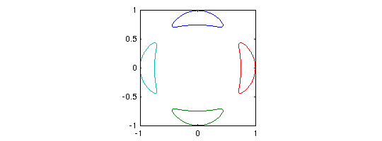
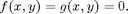
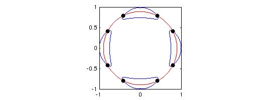
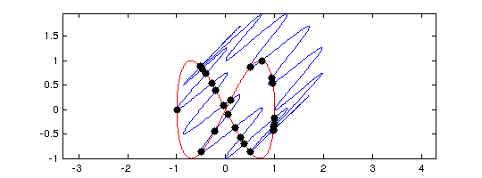
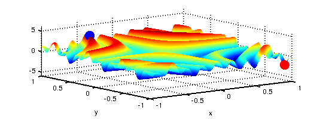
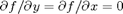
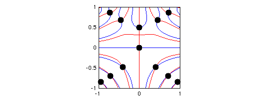

CHEBFUN2 GUIDE 3: ROOTFINDING AND OPTIMISATION
A. Townsend, March 2013
Contents
3.1 ZERO CONTOURS
Chebfun2 comes with the capability to compute the zero contours of a function of two variables. For example, we can compute a representation of Trott's curve, an important example from algebraic geometry [Trott 1997].
x = chebfun2(@(x,y) x); y = chebfun2(@(x,y) y);
trott = 144*(x.^4+y.^4)-225*(x.^2+y.^2) + 350*x.^2.*y.^2+81;
r = roots(trott);
plot(r), axis([-1 1 -1 1]), axis square
 The zero curves are represented as complex valued chebfuns (see Chapter 2 of the guide). For example,
r(:,1)
ans =
chebfun column (1 smooth piece)
interval length endpoint values
[ -1, 1] 2489 complex values
vertical scale = 1
The zero contours of a function are computed by Chebfun2 to plotting accuracy and they are typically not accurate to machine precision.
3.2 ROOTS
Chebfun2 also comes with the capability of finding zeros of bivariate systems, i.e., the solutions to $ If the roots command is supplied with one chebfun2, it computes the zero contours of that function (as in section 3.1). However, if it is supplied with two chebfun2 objects, such as roots(f,g), then it computes the roots of the bivariate system. Generically, these are isolated points.
What points on the Trott's curve intersect with the circle of radius 0.9?
g = chebfun2(@(x,y) x.^2 + y.^2 - .9^2); % circle of radius 0.9 r = roots(trott,g); plot(roots(trott),'b'), hold on plot(roots(g),'r') plot(r(:,1),r(:,2),'.k','markersize',20) % point intersections axis([-1 1 -1 1]), axis square, hold off
The solution to bivariate polynomial systems and intersections of curves, are typically computed to full machine precision.
3.3 INTERSECTIONS OF CURVES
The determination of the intersections of real parameterised complex curves can be expressed as a bivariate rootfinding problem. For instance, here are the intersections between the 'splat' curve [Guettel Example 2010] and a 'figure-of-eight' curve.
t = chebfun('t',[0,2*pi]); splat = exp(1i*t) + (1+1i)*sin(6*t).^2; % splat curve figOfAte = cos(t) + 1i*sin(2*t); % figure of eight curve plot(splat), hold on, plot(figOfAte,'r'), axis equal f = chebfun2(@(s,t) splat(t) - figOfAte(s),[0 2*pi 0 2*pi]); % rootfinding r = roots(real(f),imag(f)); % calculate intersections plot(real(splat(r(:,2))),imag(splat(r(:,2))),'.k','markersize',20) hold off
Chebfun2 uses an algorithm based the resultant method, see [Nakatsukasa, Noferini & Townsend 2013], [Nakatsukasa, Noferini & Townsend Example 2013], and [Townsend Example 2013].
3.4 GLOBAL OPTIMISATION: MAX2, MIN2, AND MINANDMAX2
Chebfun2 also provides functionality for global optimisation. Here is a non-trivial example, where we plot the computed maximum as a blue dot and the minimum as a red dot.
f = chebfun2(@(x,y) sin(30*x.*y) + sin(10*y.*x.^2) + exp(-x.^2-(y-.8).^2)); [mn mnloc] = min2(f); [mx mxloc] = max2(f); plot(f), hold on plot3(mnloc(1),mnloc(2),mn,'.r','markersize',40) plot3(mxloc(1),mxloc(2),mx,'.b','markersize',40) zlim([-6 6]), hold off
If both the global maximum and minimum are required it is roughly twice as fast to compute them at the same time by using the minandmax2 command. For instance,
tic; [mn mnloc] = min2(f); [mx mxloc] = max2(f); t=toc; fprintf('min2 and max2 separately = %5.3fs\n',t) tic; [Y X] = minandmax2(f); t=toc; fprintf('minandmax2 command = %5.3fs\n',t)
min2 and max2 separately = 0.131s minandmax2 command = 0.066s
For high accuracy the commands MIN2, MAX2, and MINANDMAX2 require the Optimisation Toolbox in Matlab.
3.5 CRITICAL POINTS
The critical points of smooth function of two variables can be located by finding the zeros of . This is a rootfinding problem. For example,
f = chebfun2(@(x,y) (x.^2-y.^3+1/8).*sin(10*x.*y)); r = roots(gradient(f)); % critical points plot(roots(diff(f,1,2)),'b'), hold on % plot zero contours of f_x plot(roots(diff(f)),'r') % plot zero contours of f_y plot(r(:,1),r(:,2),'k.','MarkerSize',30) % plot extrema axis square
There is a new command here called gradient that computes the gradient vector and represents it as a chebfun2v object. The roots command then solves for the isolated roots of the bivariate polynomial system represented in the chebfun2v representing the gradient. For more information about the gradient command see Chapter 5 of this guide.
3.6 INFINITY NORM
The infinity norm of a function is the maximum absolute value in its domain. It can be computed by passing an optional argument to the norm command.
f = chebfun2(@(x,y) sin(30*x.*y)); norm(f,inf)
ans = -0.988031624092863
3.7 MORE DETAILS
The algorithms behind rootfinding and optimization are relatively involved, so for more details, please read [Townsend & Trefethen 2013].
3.8 REFERENCES
[Guettel Example 2010] S. Guettel, http://www2.maths.ox.ac.uk/chebfun/examples/geom/html/Area.shtml
[Nakatsukasa, Noferini & Townsend Example 2013] Y. Nakatsukasa, V. Noferini and A. Townsend, Computing common roots of two bivariate functions, Chebfun Example, February 2013.
[Nakatsukasa, Noferini & Townsend 2013] Y. Nakatsukasa, V. Noferini and A. Townsend, Computing the common zeros of two bivariate functions via Bezout resultants, (2013).
[Townsend & Trefethen 2013] A. Townsend and L. N. Trefethen, An extension of Chebfun to two dimensions, submitted.
[Townsend Example 2013] A. Townsend, A new bivariate rootfinder in Chebfun2 based on Bezout resultants, May 2013.
[Trott 2007] M. Trott, Applying Groebner Basis to Three Problems in Geometry, Mathematica in Education and Research, 6 (1997), pp.15-28.